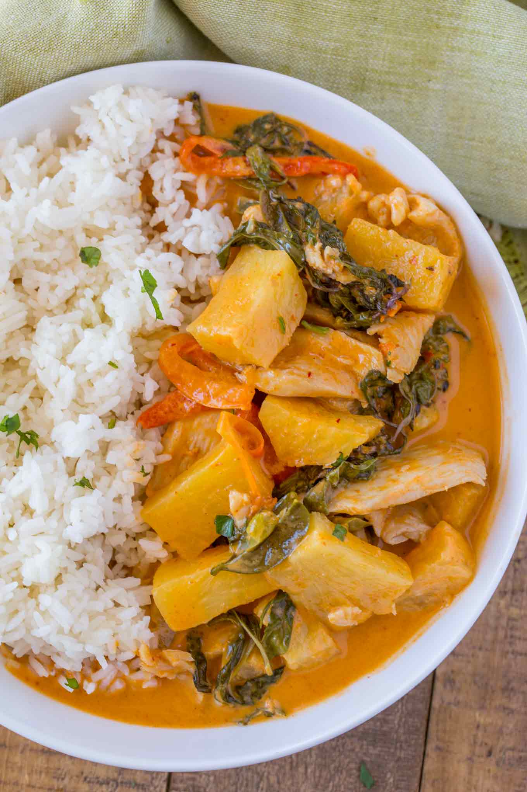

Elle's Deliciously Vegan Pineapple Curry

Ingredients
2 tablespoon coconut oil
½ red chilli, deseeded, finely chopped
1 small onion, chopped
1 red pepper, chopped
2 garlic cloves, chopped
30 g (1 ounce) ginger, chopped
4 tablespoon Thai red paste
1 x 400 ml (14 oz) tin coconut milk
1 lime, juice of (plus extra for serving, optional)
1 tablespoon demerara sugar
250 g (½ lb) pineapple
4 tablespoon coconut cream
Coriander, to serve (optional)
Instructions
In a large pan, heat the coconut oil over medium heat and fry the chopped
onion for 2-3 minutes. Add the red pepper and cook for a further 5
minutes.
Add the garlic, ginger, and red chilli and cook for another minute until
fragrant. Stir in the Thai red paste and cook for another minute before
adding in the coconut milk.
Add 200 ml water (if you want the curry to have more liquid), the juice of
a lime, and the demerara sugar.
Bring to a boil and add the pineapple chunks. Simmer for 4-5 minutes, then
add the coconut cream. Continue to simmer for a couple of minutes, until
the curry reaches the desired consistency.
Serve over rice, sprinkled with coriander and splashed with extra lime
juice if you like.